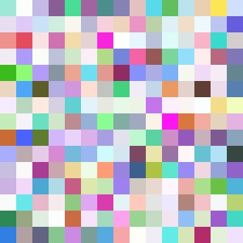

Recall: Two Big Problems with Data
- We use econometrics to identify causal relationships & make inferences about them:
- Problem for identification: endogeneity
- \(X\) is exogenous if its variation is unrelated to other factors \((u)\) that affect \(Y\)
- \(X\) is endogenous if its variation is related to other factors \((u)\) that affect \(Y\)
- Problem for inference: randomness
- Data is random due to natural sampling variation
- Taking one sample of a population will yield slightly different information than another sample of the same population


What Does Causation Mean?
We are going to reflect on one of the biggest problems in epistemology, the philosophy of knowledge
We see that X and Y are associated (or quantitatively, correlated), but how do we know if X causes Y?

Random Control Trials (RCTs) I
- The ideal way to demonstrate causation is through a randomized control trial (RCT) or “random experiment”
- Randomly assign experimental units (e.g. people, firms, etc.) into groups
- Treatment group(s) get a treatment
- Control group gets no treatment
- Compare average results of treatment vs control groups after treatment o observe the average treatment effect (ATE)
- We will understand “causality” (for now) to mean the ATE from an ideal RCT

Random Control Trials (RCTs) III

Random Control Trials (RCTs) IV
- Random assignment to groups ensures that the only differences between members of the treatment(s) and control groups is receiving treatment or not

Random Control Trials (RCTs) IV
Random assignment to groups ensures that the only differences between members of the treatment(s) and control groups is receiving treatment or not
Selection bias: (pre-existing) differences between members of treatment and control groups other than treatment, that affect the outcome

Selection Bias I
\[\color{#6A5ACD}{Y^0_J}-\color{#6A5ACD}{Y^0_M} \neq 0\]
- Selection bias: (pre-existing) differences between members of treatment and control groups other than treatment, that affect the outcome
- i.e. John and Maria start out with very different health scores before either decides to buy insurance or not (“receive treatment” or not)
Selection Bias II
\[\color{#6A5ACD}{Y^0_J}-\color{#6A5ACD}{Y^0_M}\neq 0\]
The choice to get treatment is endogenous
A choice made by optimizing agents
John and Maria have different preferences, endowments, & constraints that cause them to make different decisions
Understanding Selection Bias
Treatment group and control group differ on average, for reasons other than getting treatment or not!
Control group is not a good counterfactual for treatment group without treatment
- Average untreated outcome for the treatment group differs from average untreated outcome for untreated group
\[\color{#e64173}{Avg(}\color{#6A5ACD}{Y_i^{0}}\color{#e64173}{|T=1)}-\color{#6A5ACD}{Avg(Y_i^{0}|T=0)}\]
- Recall we cannot observe \(\color{#e64173}{Avg(}\color{#6A5ACD}{Y_i^{0}}\color{#e64173}{|T=1)}\)!
Understanding Selection Bias: Regression
- Consider the problem in regression form:
\[Y = \beta_0+\beta_1 T_i + u_i\]
Where \(T_i = \begin{cases} \color{#6A5ACD}{0} & \color{#6A5ACD}{\text{ if person is not treated}}\\\color{#e64173}{1} & \color{#e64173}{\text{ if person is treated}}\\ \end{cases}\)
The problem is \(cor(T,u) \neq 0\)!
- \(T_i\) (Treatment) is endogenous!
- Getting treatment is correlated with other factors that determine health!
Random Assignment: The Silver Bullet
If treatment is randomly assigned for a large sample, it eliminates selection bias!
Treatment and control groups differ on average by nothing except treatment status
Creates ceterus paribus conditions in economics: groups are identical on average (holding constant age, sex, height, etc.)
Treatment Group
Control Group
Random Assignment: Regression
- Consider the problem in regression form:
\[Y = \beta_0+\beta_1 T_i + u_i\]
- If treatment \(T_i\) is administered randomly, it breaks the correlation with \(u_i\)!
- Treatment becomes exogenous!
- \(cor(T,u)=0\)
Treatment Group
Control Group
The Quest for Causal Effects I
RCTs are considered the “gold standard” for causal claims
But society is not our laboratory (probably a good thing!)
We can rarely conduct experiments to get data

The Quest for Causal Effects II
Instead, we often rely on observational data
This data is not random!
Must take extra care in forming an identification strategy
To make good claims about causation in society, we must get clever!

The First Natural Experiment

John Snow utilized the first famous natural experiment to establish the foundations of epidemiology and the germ theory of disease
Water pumps with sources downstream of a sewage dump in the Thames river spread cholera while water pumps with sources upstream did not

The First Natural Experiment
1813-1858
John Snow utilized the first famous natural experiment to establish the foundations of epidemiology and the germ theory of disease
Water pumps with sources downstream of a sewage dump in the Thames river spread cholera while water pumps with sources upstream did not
RCTs are All the Rage
Professors Esther Duflo and Abhijit Banerjee, co-directors of MIT's @JPAL, receive congratulations on the big news this morning. They share in the #NobelPrize in economic sciences “for their experimental approach to alleviating global poverty.”
— Massachusetts Institute of Technology (MIT) (@MIT) October 14, 2019
Photo: Bryce Vickmark pic.twitter.com/NWeTrjR2Bq

But Not Everyone Agrees I

Angus Deaton
Economics Nobel 2015
“The RCT is a useful tool, but I think that is a mistake to put method ahead of substance. I have written papers using RCTs…[but] no RCT can ever legitimately claim to have established causality. My theme is that RCTs have no special status, they have no exemption from the problems of inference that econometricians have always wrestled with, and there is nothing that they, and only they, can accomplish.”
Deaton, Angus, 2019, “Randomization in the Tropics Revisited: A Theme and Eleven Variations”, Working Paper
But Not Everyone Agrees II

Lant Pritchett
“People keep saying that the recent Nobelists ‘studied global poverty.’ This is exactly wrong. They made a commitment to a method, not a subject, and their commitment to method prevented them from studying global poverty.”
“At a conference at Brookings in 2008 Paul Romer [2018 Nobelist] said:”You guys are like going to a doctor who says you have an allergy and you have cancer. With the skin rash we can divide you skin into areas and test variety of substances and identify with precision and some certainty the cause. Cancer we have some ideas how to treat it but there are a variety of approaches and since we cannot be sure and precise about which is best for you, we will ignore the cancer and not treat it.”
But Not Everyone Agrees III
Angus Deaton
Economics Nobel 2015
“Lant Pritchett is so fun to listen to, sometimes you could forget that he is completely full of shit.”
[Source](https://medium.com/@ismailalimanik/lant-pritchett-the-debate-about-rcts-in-development-is-over-ec7a28a82c17
RCTs and “Evidence-Based Policy”
Programs randomly assign treatment to different individuals and measure causal effect of treatment
RAND Health Insurance Study: randomly give people health insurance
Oregon Medicaid Expansion: randomly give people Medicaid
HUD’s Moving to Opportunity: randomly give people moving vouchers
Tennessee STAR: randomly assign students to large vs. small classes
RCTs and External Validity II

RCTs and External Validity II
IN MICEhttps://t.co/mLuKBRhsAb
— justsaysinmice (@justsaysinmice) September 15, 2020